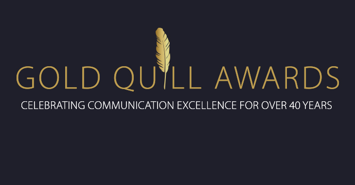

Overview of IABC
Joining IABC Is An Investment In Your Career
The International Association of Business Communicators (IABC) is a global network of communication professionals committed to improving organizational effectiveness through strategic communication. Established in 1970, IABC serves members in more than 70 countries for networking, career development and personal growth.
Learn more about what we offer for students, professionals and corporate groups who want to take their business communication skills to the next level.